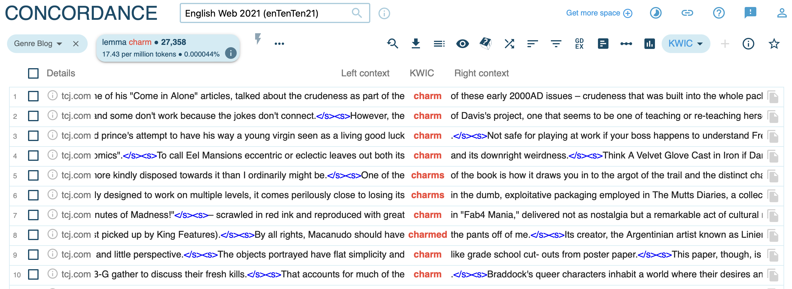

Concordance
![]()
University of Oxford / CIRHSS & CompLexico, Udayana University
2024-07-22
Roadmap
What is a concordance?
What can we learn from looking at concordance lines?
Common aspects to look at from concordance
My typical workflow in analysing concordance
Practice
What is a concordance?
“a collection of the occurrences of a word-form, each in its own textual environment. In its simplest form, it is an index. Each word-form is indexed, and a reference is given to the place of each occurrence in a text” (Sinclair 1991: 32).
“gives contextual information about a word” (Barth & Schnell 2021: 82).
What is a concordance?
“a collection of the occurrences of a word-form, each in its own textual environment. In its simplest form, it is an index. Each word-form is indexed, and a reference is given to the place of each occurrence in a text” (Sinclair 1991: 32, emphases mine).
What is a concordance?
MS Word find is a kind of concordance!
What is a concordance? Key Word in Context (KWIC)
KWIC: a modern-day format of a concordance.

What is a concordance?
Take away:
essentially a means to display (raw, unanalysed) data more efficiently
does not perform the analysis to answer the research question
we, the researcher, need to analyse them in such a way that these concordance data could provide answer to our research question(s).
It is insufficient just to know the how-to of corpus linguistics, but also the linguistics side.
Roadmap
1. What is a concordance?
What can we learn from looking at concordance lines?
Common aspects to look at from concordance
My typical workflow in analysing concordance
Practice
What can we learn from looking at concordance lines?
Electronic concordance can be sorted (alphabetically) in various ways (Tribble 2010: 175):
by the node/target word/lemma/phrase
by the left context of the node
by the right context of the node
These sorting help reveals different kinds of usages of the node (cf. Hunston 2002: 42–52).
Left-context sorting for the concordance of charm. Any regularity/pattern?
Concordance link: https://ske.li/15z
What can we learn from looking at concordance lines?
See Hunston(2002: 42–52) for details of the following points.
“Observing the ‘central’ and ‘typical’”
- in frequency terms
“Observing meaning distinctions”
- different usage patterns of near-synonyms
“Observing meaning and patterns”
distinct senses/meanings of a word and their patternings (lexical, morpho-syntactical, morphological, etc.) (cf. Gries 2006)
“Distinguishing between the meanings is a matter of distinguishing between patterns of usage.” (Hunston 2002: 47)
“Observing detail”
mass of data, more specific observation of individual words
e.g., different semantic type of verbs following the phrase advicenoun as to (Hunston 2002: 52)
Roadmap
1. What is a concordance?
2. What can we learn from looking at concordance lines?
Common aspects to look at from concordance
My typical workflow in analysing concordance
Practice
Common aspect to look at from concordance
See Sinclair (2004, Ch. 2) for further details for “The search for units of meaning”
collocation (Sinclair & Carter 2004: 28): “a frequent co-occurrence of words”
colligation (Sinclair & Carter 2004: 32): “co-occurrence of grammatical choices”
semantic preference
semantic abstraction/categorisation from a group of collocates
example:
categorising the semantic type of noun collocates of the EXPERIENCER argument of ANGRY vs. MAD (Suari, Rajeg & Sudipa 2024); categorisation based on the cross-linguistic semantic catalogue Concepticon (List et al.)
- visualising the results based on the collocation strength of these collocates with the adjectives in COCA corpus
semantic prosody
pragmatic aura of the context surrounding the node word
typically whether the context is positive or negative
“connotation” in the traditional semantics (McEnery & Hardie 2012: 136)
{kind=link}
Roadmap
1. What is a concordance?
2. What can we learn from looking at concordance lines?
3. Common aspects to look at from concordance
My typical workflow in analysing concordance
Practice
My typical workflow in analysing concordance
Define my research question(s) (RQs)
- usually within theoretical contexts, mainly in Cognitive Linguistics (esp. cognitive lexical semantics & construction grammar) and/or Austronesian/Indonesian linguistics.
Extract concordances of the phenomenon from a corpus (not using Sketch Engine)
remember, concordance is just a way to display the raw data
operationalise your RQs such that they translate into what to extract from the corpus to retrieve the (candidate) data to be analysed (i.e., qualitatively annotated and further analysed statistically) to answer your RQs.
Annotate/Code each line of the concordance in MS Excel/Spreadsheet software
identify the variable(s) to be analysed based on your research question
annotate that as columns in Excel; one variable, one column
at this stage, theoretical framework/linguistic skills will be important (at least for me)
Statistical/quantitative analyses + visualisation in R
any statistical/programming software can be used as long as they provide the statistical techniques you are going to use.
very much dependent on your RQs
Report the results
My typical workflow in analysing concordance: Example
Topic: Indonesian diathesis (cf. Rajeg & Artawa, forthcoming)
Context - Qualitative (theoretical) claim (Moeliono et al. 2017: 257; Sneddon et al. 2010: 470):
In Indonesian passive clause, AGENT can be optionally expressed
How would we measure this optionality?
Context - Quantitative (null-hypothesis/theoretical) prediction:
- If we look at a sample of passive clauses (say from a corpus), the presence/absence of AGENT would be roughly equal
Research question:
- To what extent does AGENT is explicitly expressed or suppresed in a sample of passive clauses (with the Indonesian passive di- prefix)?
Operationalisation - corpus query:
What should we extract from the corpus as a concordance? ü§î
- passive sentences containing verb marked with di-
No syntactic parsing in the Indonesian corpus; what to do? ü§∑
- regular expressions [RegEx] “
di[a-z]{5,}”
- regular expressions [RegEx] “
50 random concordance lines for each of the total 12 genres
- Total raw data to analyse: 600 lines (50 lines * 12 genres)
save the concordance into tab-separated plain text to be opened in MS Excel
Operationalisation - annotating the concordance:
Given the RQ, what variable/aspect would we annotate from the concordance sample? How?
- we need to annotate the presence/absence of AGENT argument such that later on we can count/quantify how much is the AGENT present/absent.
Let’s see the concordance data
Results
Theoretical claim: AGENT is optionally expressed in Indonesian passive with di-
- How would we measure this optionality?
RQ: To what extent does AGENT is explicitly expressed or suppresed in a sample of passive clauses (with the Indonesian passive di- prefix)?
Corpus finding:
Roadmap
1. What is a concordance?
2. What can we learn from looking at concordance lines?
3. Common aspects to look at from concordance
4. My typical workflow in analysing concordance
- Practice
Practice
Extract concordance of a word or phrase from SkE
Retrieve random sample from SkE
Try to sort the concordance into more meaningful display to detect pattern
Export to .csv/.xlsx
Open in MS Excel
Annotate co-occurrence of the node in terms of its:
lexical co-occurrence (collocation)
- e.g., the subject/object of a verb; the modifier of a head noun; any recurring prepositional combination (?); others (?)
grammatical preference of the node word
- e.g., syntactic patterning
semantic preference
semantic prosody
share and discuss your finding
End of Concordance
source files for all materials:
pdf version as a handout here
How to cite these materials:
Rajeg, Gede Primahadi Wijaya. 2024. Materials for the Diponegoro Summer Course in Corpus Linguistics (DipSCORLING 2024) (22 - 27 July 2024). R Quarto. Zenodo. https://doi.org/10.5281/zenodo.12793922. (22 July, 2024).
References
Barth, Danielle & Stefan Schnell. 2021. Understanding corpus linguistics. London: Routledge. https://doi.org/10.4324/9780429269035.
Gries, Stefan Th. 2006. Corpus-based methods and cognitive semantics: The many senses of to run. In Stefan Th. Gries & Anatol Stefanowitsch (eds.), Corpora in Cognitive Linguistics: Corpus-based approaches to syntax and lexis, 57–99. Berlin: Mouton de Gruyter.
Hunston, Susan. 2002. Corpora in applied linguistics. 1st edn. Cambridge ; New York: Cambridge University Press. https://doi.org/10.1017/CBO9781139524773.
List, Johann-Mattis, Annika Tjuka, Mathilda Van Zantwijk, Frederic Blum, Carlos Barrientos Ugarte, Christoph Rzymski, Simon Greenhill & Robert Forkel. CLLD concepticon 3.1.0. https://doi.org/10.5281/ZENODO.7777629.
McEnery, Tony & Andrew Hardie. 2012. Corpus linguistics: Method, theory and practice. Cambridge: Cambridge University Press.
Moeliono, Anton M., Hans Lapoliwa, Hasan Alwi, Sry Sattya Tjatur, Wisnu Sasangka & Sugiyono Sugiyono. 2017. Tata bahasa baku bahasa Indonesia. Edisi Keempat. Jakarta: Badan Pengembangan dan Pembinaan Bahasa, Kementrian Pendidikan dan Kebudayaan. http://repositori.kemdikbud.go.id/16351/.
Rajeg, Gede Primahadi Wijaya & Ketut Artawa. Kajian korpus kuantitatif terhadap aspek-aspek diatesis dalam bahasa Indonesia. Book chapter manuscript. https://doi.org/10.5281/zenodo.10615407.
Sinclair, John. 1991. Corpus, concordance, collocation (Describing English language). Oxford: Oxford University Press.
Sinclair, John McHardy & Ronald Carter. 2004. Trust the text: Language, corpus and discourse. London ; New York, N.Y: Routledge.
Sneddon, James Neil, Alexander Adelaar, Dwi Noverini Djenar & Michael C. Ewing. 2010. Indonesian reference grammar. 2nd edn. Crows Nest, New South Wales, Australia: Allen & Unwin.
Suari, Ida Ayu Saskara Tranggana, Gede Primahadi Wijaya Rajeg & I. Nengah Sudipa. 2024. Exploring Grammatical and Semantic Profiles of Angry and Mad: A Corpus-Based Study. EJI (English Journal of Indragiri) : Studies in Education, Literature, and Linguistics 8(2). 272–296. https://ejournal-fkip.unisi.ac.id/eji/article/view/2749.
Tribble, Christopher. 2010. What are concordances and how are they used? In Anne O’Keeffe & Michael McCarthy (eds.), The Routledge handbook of corpus linguistics (Routledge Handbooks in Applied Linguistics), 167–183. London ; New York: Routledge.